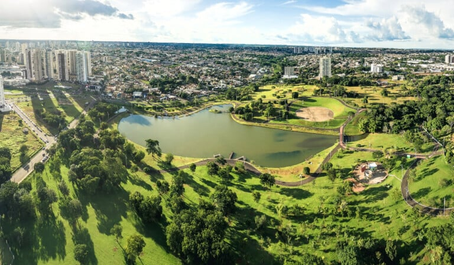

Mato Grosso do Sul, com 2.757.013 habitantes (2022), é o estado menos populoso do Centro-Oeste e ocupa o 21º lugar em população no Brasil. A capital, Campo Grande, é o município mais populoso, com 898.100 habitantes. Uma curiosidade é que Mato Grosso do Sul possui o terceiro maior contingente de população indígena do Brasil, com 116.469 pessoas em 2022.
